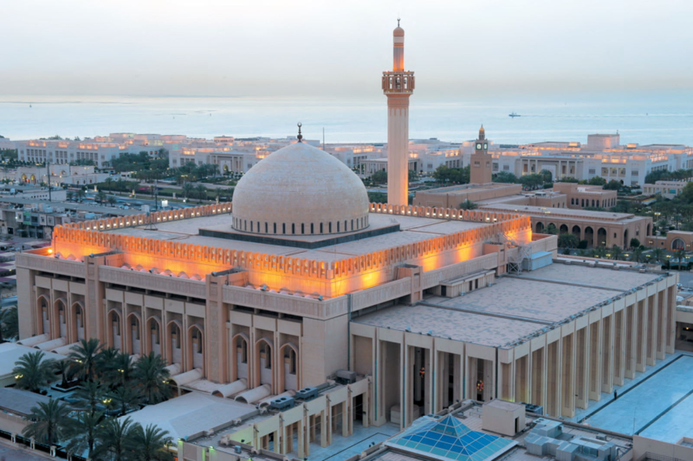
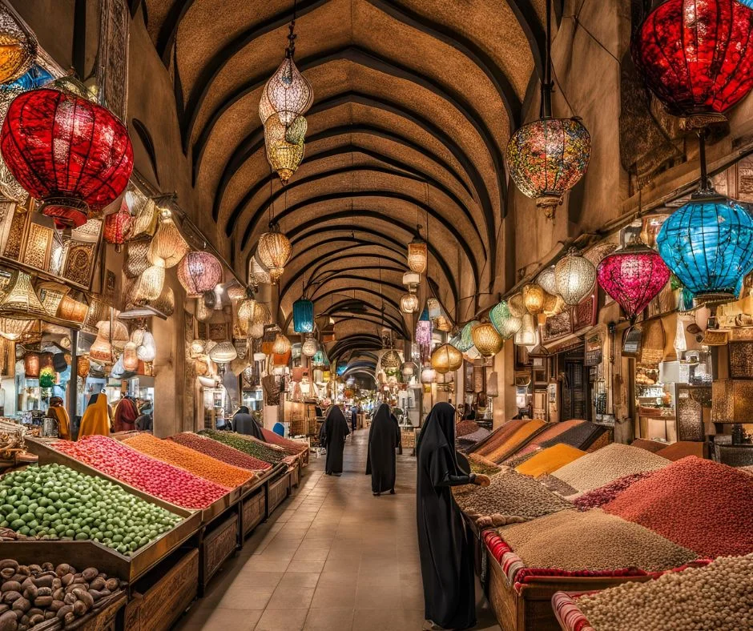

The Iconic Kuwait Towers: A Must-See Landmark
Posted on January 16, 2025 by Kevin Daniel
No trip to Kuwait is complete without visiting the Kuwait Towers. These towers offer stunning views of the city and the Persian Gulf. From the observation deck, you can see the city’s skyline and learn about the history of the towers...
Read More

Exploring the Grand Mosque: A Cultural Experience
Posted on January 14, 2025 by Kevin Daniel
The Grand Mosque in Kuwait is an architectural marvel and one of the largest mosques in the country. It offers guided tours for non-Muslim visitors, providing a great opportunity to learn about Islamic culture and traditions...
Read More

Shopping at Souq Al-Mubarakiya: A Taste of Kuwait’s Heritage
Posted on January 12, 2025 by Kevin Daniel
Souq Al-Mubarakiya is one of the oldest markets in Kuwait, offering everything from traditional spices to handmade goods. Wander through the narrow alleyways and immerse yourself in the sights, sounds, and smells of this vibrant market...
Read More